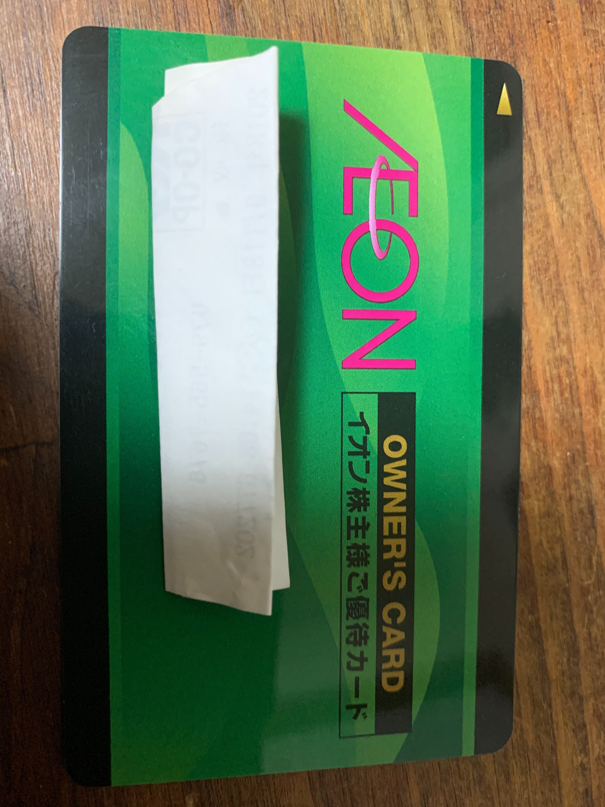

イオン・株主優待
2020/5/30
イオンの株主になったら、どんな利点があるのか？
あまりお金はないけど、投資してみたい！という人におすすめです。
目次
- 1 投資とは
- 2 イオン株主優待
- 3 キャッシュバック
- 4 イオンシネマ
- 5 イオンラウンジ
- 6 長期保有優待
- 7 まとめ
投資とは？
そもそも投資とは、自分が将来的に期待できる・成長してほしい企業・国・団体にお金を貸すということです。
今回は、企業に投資するうちの株式投資を扱って行くため、企業の経営に関わるということでもあります。
昔は、経営に加わるという本質があったわけですが、今は大株主くらいしか経営に参加しているという実感はないと感じていますが...
その代わりに、一般的な株主でも投資に価値を見出すために配当金や優待特典を受け取る権利があるといえます。
お金は銀行に預けるのが一般的ですが、それも立派な投資です。
ただ、リスクリターンが高いということです。（間接投資と直接投資）
最近は、副業で投資を行っている人も多いので、お金儲けの手段として考えてもらって大丈夫です。 あと、テレビで紹介されるプロとは違うので、もっと気軽で大丈夫ですが、 まとまったお金が必要なので、自己責任ということにはなります。
といっても、今回紹介するイオンは、様々な事業によって成り立っているので、倒産ということは当分ないでしょう。
なので、投資金がなくなるということはないと考えてもらって大丈夫かと。（財務状況について）
イオン・株主優待
今回紹介するのはイオンの株主優待についてですが、株主優待自体が自社商品の特典が多いため、 イオングループ系列の店舗をよく利用する方に限られますが、そういった方には問答無用で買ってもいいのでは？と思います。
＊他銘柄でもそうですが、イオンは最低100株から株主優待を得ることができます。
キャッシュバック
さて、イオンの株主となることで上の写真のような株主優待カードを手にすることができます。
2枚送られてくるので、イオン系列店を利用する家族に渡しておきましょう。
このカードでいろいろな特典がありますが、最もうれしいのがキャッシュバックです。下図に示すように、
保有株式数によって違いがあります。
| 100株 | 3％のキャッシュバック |
|---|---|
| 500株 | 4％のキャッシュバック |
| 1000株 | 5％のキャッシュバック |
| 3000株 | 7％のキャッシュバック |
もちろん保有数が多いほど手厚いものとなりますが、100株でも十分です！！
半年で100万円までという上限額が決められていますが、100株でも最大年6万円が返ってきます！！
もし、10年間保有してれば最大60万円返ってくるのでとてもお得です。 株を持っているだけでお金が入ってくるので、ある程度放置しててもいいという面でも初心者向きです。
※イオン系列すべてで使えるわけではなく、ミニストップなどでは使えません。
※支払方法に違いがあったりと、系列店によって異なる点もあるため注意！（詳しくは、こちら）
イオンシネマ
イオングループが展開する事業の中には映画館も含まれます。
優待カードでイオンシネマでもおいしい特典を得ることができます。（詳しくは、こちら）
| 高校生以上 | 鑑賞料金：1000円 |
|---|---|
| 中学生以下 | 鑑賞料金：800円 |
とても安くなりますね
また、複数人で映画館に行くと、同伴者も全員この優待料金で映画を鑑賞することができます。
これだけではなく、ポップコーン or ドリンク（Sサイズ）が無料で受け取ることができます。
イオンシネマが近くにあり、よく映画を見に行く人ならば、これだけでうれしい特典といえますね！
イオンラウンジ
イオンラウンジとは、イオンモール内にある休憩スペースのことであり、お菓子やドリンクが置いてあります。
株主かお得意様の特典なので少し特別感があるスペースとなっています。
※イオンラウンジの形態が変わる可能性があるため、ご注意を！（詳しくは、こちら）
また、すべてのイオンモールにイオンラウンジがあるわけではないので、ご確認ください。（イオンラウンジ店舗一覧）
大型ショッピングモールであるイオンモールでの買い物は時間がかかることもあり、 一休みしたい！ という時に利用できるので、株主の間でも人気のある特典となっています。
長期保有優待
上記のものと比べると、権利が得られる人は減りますが、 1000株以上を3年以上保有した場合に限り、イオンギフトカードが送られてきます。
| 1000株以上 | 2000円分のギフトカード |
|---|---|
| 2000株以上 | 4000円分のギフトカード |
| 3000株以上 | 6000円分のギフトカード |
| 5000株以上 | 10000円分のギフトカード |
この条件を満たせる人はなかなかいないでしょうが、保有株式数が増えれば、 キャッシュバックでもさらなる恩恵を受けることができるため、資金に余裕がある方は視野に入れてもいいと思います。
まとめ
さて、イオンの株を保有することで様々な特典を受けることができることがわかったでしょうか？
他の銘柄を調べたらわかりますが、こんなに手厚い優待はそうそうありません。
先にも言いましたが、イオンは倒産しにくい & 様々な特典を受けれる といった面で安心した長期保有しておけますし、 長期保有していればどんどん得していきます。
ただし、イオンは配当金が少ないため、イオングループをあまり利用しない人にはお勧めしないです。
しかし、よく利用する人にとっては、長期的にみると基本的に儲かる投資といえます。
相場では、20万以上は必要だろうと思います。（イオン株価）
お金に余裕がある方は、イオン株主となり、得してみませんか？